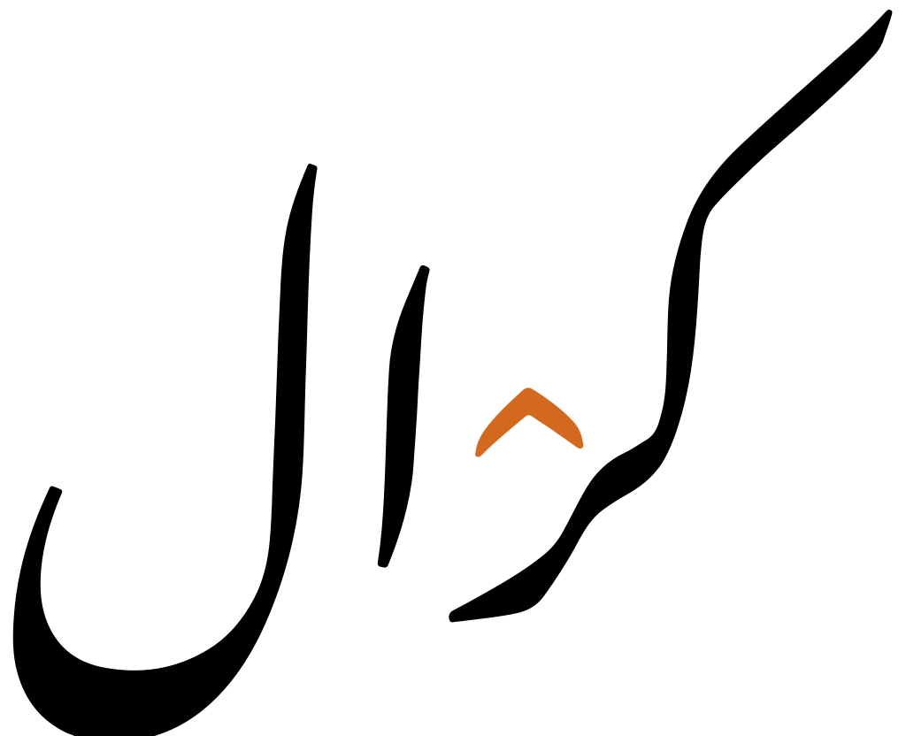
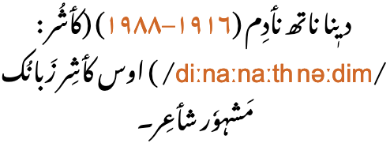
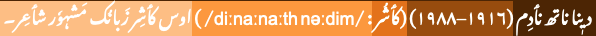
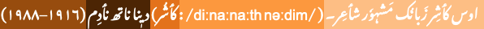
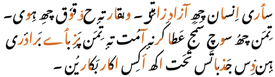
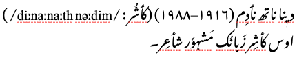
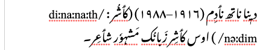

There are few nastaliq fonts around, and only a few of those support Kashmiri. The Noto Nastaliq Urdu font incorporated adaptations to support Kashmiri as of version 3.002. This page uses a webfont based on recent versions of that font. Note that the language of the text needs to be set to 'ks' for the correct shapes to be applied. (At the time of writing, a macOS bug appears to prevent use of the latest version of the font when installed on your system – only the pre-installed version is available, but the webfont should work. And note also that Safari web browser, by policy, will only use pre-installed fonts. However, the latest version of the font works fine when installed on Windows.) An alternative is to use SIL's Awami Nastaliq font, but this is a Graphite font and so only works fully in the Firefox web browser, and font settings are needed to produce the rounded hamza diacritics, rather than the s-shaped ones produced by default by the Awami font.
This page brings together basic information about the Arabic script and its use for the Kashmiri language, using the latest orthographic changes. It aims to provide a brief, descriptive summary of the modern, printed orthography and typographic features, and to advise how to write Kashmiri using Unicode.
For information about the script in general, see the Arabic overview. The Perso-Arabic script is recognised as the official script of Kashmiri language by the Jammu and Kashmir government and the Jammu and Kashmir Academy of Art, Culture and Languages.wkl
کٲشُر
Kashmiri is written in the Devanagari script by Hindus. Muslims use the arabic script.
The Kashmiri Arabic orthography is derived from the Arabic/Persian abjads, where in normal use the script represents only consonant and long vowel sounds. However, Kashmiri is one of the Arabic orthographies that regularly indicates all vowel sounds, making it more like an alphabet.wkl,#Writing_system See the table to the right for a brief overview of features for the modern Kashmiri orthography using the Arabic script.
The Arabic alphabet has been adapted in this orthography in order to cope with the many more vowels sounds in languages such as Kashmiri.
Kashmiri is principally written using the nasta'liq style of Arabic writing. Glyphs are more drawn out, and the baseline tends to be sloping from word to word.
Kashmiri text runs right-to-left in horizontal lines, but numbers and embedded Latin text are read left-to-right.
The script is cursive, and some basic letter shapes change radically, depending on what they join to. The nastaliq styling creates diagonal baselines between joined characters, and tends to reduce clarity about where one letter ends and the next starts. (The dots and other diacritics associated with letters become particularly useful for the reader.) ❯ cursive
There is no case distinction.
Words are separated by spaces.
Modern Kashmiri has 19 basic consonant letters and 6 aspirated digraphs in its alphabet to represent native sounds, but tends to spell words loaned from Persian, Arabic and Urdu using 13 more. ❯ consonants
Letters are used to indicate nasalisation and palatalisation (which is common in Kashmiri). ❯ nasalisation ❯ palatalisation
Kashmiri is an alphabet where vowel sounds are written using a mixture of combining marks and letters. Unlike Arabic, Persian, and Urdu, all vowel diacritics are normally shown when writing Kashmiri.
Representation of vowel sounds is complicated (a) because there are far more vowel sounds than in Arabic (or Persian), and (b) because the code points used to represent a given vowel typically differ according to whether this is an isolate, initial, medial, or final joining form. The choice between precomposed and decomposed realisations of a vowel letter is also complicated. The script draws on combinations of 21 code points in order to write 16 vowel sounds. ❯ vowels
The distinction between ijam vs. tashkil has a bearing on several Kashmiri graphemes.
Additional diacritics indicate the absence of a vowel in consonant clusters, and gemination. Unlike other Arabic orthographies the jazm (sukun), used to show vowel absence, is commonly placed over the second consonant in a cluster, rather than the first – which means that that consonant may be associated with both a vowel diacritic and jazm diacritic. ❯ clusters
A mandatory ligature is used for combinations of lam + alif.
Kashmiri uses native digits, and Arabic code points for several of the more common punctuation marks. ❯ numbers
Joining forms
Because the Arabic script is 'cursive' (ie. joined-up) writing, letters tend to have different shapes depending on whether they join with adjacent letters or not (see cursive). In addition, vowels can be represented using different characters, depending on where in a word they appear.
In scripts such as Arabic, several characters have no left-joining form. In what follows we'll use the characters ي and د to illustrate shapes. The former can join on both sides, but the latter can only join on the right.
Left-joining glyphs are commonly called initial; dual-joining are called medial; and right-joining are called final. Glyphs that don't join on either side are called isolated. However, these glyph shapes can be found in various places within a single word.
Word-initial characters usually have initial glyph shapes (eg. 064A ). However, characters that only join to the right will use an isolated glyph shape (eg. 062F ).
Furthermore, words beginning with a vowel are always preceded by a vowel carrier, which is normally ا
(eg. 0627 06CC or 0627 064E ).
Word-medial characters will typically join on both sides
(eg. 064A ) but those that only join to the right will use a final glyph (eg. 062F ).
However, if either of those is preceded by another character that only joins to the right, the glyph shapes rendered will be initial (eg. 064A )
and isolated (eg. 062F ), respectively.
Word-final characters will typically use a final glyph shape (eg. 064A and 062F ).
However, if the previous character joins only to the right, they will use isolated glyph shapes (eg.064A and 062F ).
In all this contextual glyph shaping the basic shapes used for a character can vary significantly in a script like Arabic. This also includes some characters that only have ijam dots in certain contexts.
Character index
Letters
Show
Basic consonants
ؠ␣ب␣ت␣ج␣د␣ر␣ز␣س␣ش␣ل␣م␣ن␣و␣ٹ␣پ␣چ␣ڈ␣ژ␣ک␣گ␣ں␣ھ␣ہ␣ی
Extended consonants
ط␣ق␣خ␣غ␣ع␣ف␣ذ␣ث␣ص␣ض␣ظ␣ح␣ڑ
Vowels
آ␣أ␣إ␣ا␣ٲ␣ۄ␣ؤ␣ۂ␣ے
Other
ـ
Not used for Kashmiri
ئ␣ك␣ي␣ۍ␣ٮ␣ٳ␣ځ␣ۆ␣ێ␣ݬ␣ࢡ
Combining marks
Show
Vowels
َ␣ُ␣ٚ␣ِ␣ٕ␣ٖ␣ٟ␣ٓ␣ٔ␣ٗ
Other
ّ␣ْ␣ؔ␣͏
Not used for Kashmiri
ٛ␣۪
Numbers
Show۰␣۱␣۲␣۳␣۴␣۵␣۶␣۷␣۸␣۹
Punctuation
Show۔␣،␣؛␣؟␣٪␣“␣”
ASCII
!␣(␣)␣:
Other
Show␣␣␣␣␣␣␣␣␣␣␣
To be investigated
.␣[␣]␣§␣«␣»␣ʼ␣ۓ␣␣‑␣–␣—␣‘␣’␣†␣‡␣…␣‰␣′␣″␣‹␣›␣₹
Items to show in lists
Phonology
These are sounds for the Kashmiri language.
Click on the sounds to see where else in the document they are referred to.
Vowel sounds
Plain vowels.
Front
Central
Back
High
iiː
ɨɨː
uuː
Mid
eeː
əəː
ooː
Low
aaː
ɔ
Diphthongs.
Front
Central
Back
High
Mid
əi əu
Low
Consonant sounds
labial
dental
alveolar
post-
alveolar
retroflex
palatal
velar
glottal
stops
pb
td
ʈɖ
kɡ
aspirated
pʰ
tʰ
ʈʰ
kʰ
affricates
t͡s
t͡ʃd͡ʒ
aspirated
t͡sʰ
t͡ʃʰ
fricatives
sz
ʃ
h
nasals
m
n
approximants
w
l
j
trills/flaps
r
Bilabial
Dental
Alveolar
Retroflex
Alveolo
-palatal
Velar
Glottal
Stop /
Affricate
plain
p b
t d
ts
ʈ ɖ
tʃ dʒ
k ɡ
aspirated
pʰ
tʰ
tsʰ
ʈʰ
tʃʰ
kʰ
Fricative
s z
ʃ
h
Nasal
m
n
Approximant
l
j
w
Trill
r
Tone
Kashmiri is not a tonal language.
Structure
tbd
Vowels
More vowel details
The following table summarises the main vowel to character assigments.
Each table cell shows word-initial, word-medial, and word-final forms from right to left. The glyphs shown are illustrative; alternative shapes may occur (see joining_forms). Click/tap on items to see a list of the components for that cell.
iاِ◌ِ◌ِ iːایٖیٖی
ɨإ◌ٕ◌ٕ ɨːاٟ◌ٟ◌ٟ
uاُ◌ُ◌ُ uːاوٗوٗوٗ
eایٚیٚےٚ eːاییے
oاوٚوٚوٚ oːاووو
əأ◌ٔ◌ٔ əːٲٲٲ
ɔاۄۄۄ ɔː––ۄآ
aاَ◌َ◌َ aːآاا
Kashmiri vowels.
For a question about the ordering of characters in final e, see final_e. For questions about whether to use precomposed or decomposed letters, see encoding.
This is the set of characters needed to represent the Kashmiri vowels, including decompositions and compositions:
ی␣ِ␣إ␣ٕ␣ٟ␣ُ␣ے␣ٚ␣و␣ۄ␣ٲ␣أ␣ٔ␣آ␣ا␣َ␣ٓ␣ٖ␣ٗ
Several of the characters are used in combinations to represent a given vowel sound, in a given position. Note that whether a vowel is represented using a precomposed or decomposed form is not straightforward (see encoding).
Precomposed vs. decomposed characters
إ␣أ␣آ␣ؤ␣ۂ
The characters just above are vowels or consonants followed by a vowel that Unicode represents in NFC-normalised text as atomic characters, but that normalise in NFD to a code point sequence. Generally, the precomposed form is preferred, and more common, but they are canonically equivalent. These are therefore included in the Kashmiri repertoire for representing those sound combinations.
Combining marks used for vowels
Kashmiri uses the following combining marks for vowels.
ِ␣ٖ␣ٕ␣ٟ␣ُ␣ٚ␣ٔ␣َ␣ٗ␣ٓ
0653 only occurs in decomposed text. All the rest appear as separate code points, although a few may also, in some cases, be combined with a base as an atomic character. Where a vowel is indicated in the IPA, the mark can produce that vowel on its own, whereas the others only occur in combination with other letters.
Vowel letters
Dedicated vowel letters
These are the dedicated vowel letters.
إ␣ے␣ۄ␣ٲ␣أ␣آ␣ا
All word-initial vowels begin with ا, which either carries a vowel diacritic or precedes the characters that indicate the vowel (see standalone). Word-medially, it also functions alone as a vowel in its own right, to represent the sound aː.
Consonant letters used for vowels
Kashmiri uses the following consonant characters to write vowels, generally in combination with diacritics, but also alone when representing eː and oː in non-initial positions.
ی␣و␣ع
In a standard Arabic orthography these characters would be regarded as matres lectionis, but since Kashmiri shows all vowel diacritics they don't have the same role here.
Multipart vowels
A majority of vowels in Kashmiri are represented by multipart vowels in at least one positional form.
Word-initial vowels are nearly all multipart in normal text.
اِ␣ایٖ␣اٟ␣اُ␣اوٗ␣ایٚ␣ای␣اوٚ␣او␣اۄ␣اَ
In decomposed text, 3 more word-initial forms are also composites:
إ␣أ␣آ
Only ٲ doesn't decompose.
In other locations the following multipart vowels also occur:
یٖ␣وٗ␣یٚ␣◌ٚے␣ےٚ␣وٚ␣ۄآ
Standalone vowels
Word-initial standalone vowels always begin with ا or (for loan words) ع, either as a carrier for a diacritic, or before the other characters that represent the vowel.
The list above contains several other single Unicode code points that look like combinations of Kashmiri letters and vowel diacritics, but they neither decompose nor recompose during normalisation. The Unicode Standard descriptions for these characters indicate that they are intended for use with specific languages, and Kashmiri is not listed amongst those. The hamza in these characters is an ijam, rather than a vowel diacritic, ie. it is an integral part of the letter. See Ijam, tashkil, hamza.
Nevertheless, they may appear in Kashmiri text – for example, ۆ [U+06C6 ARABIC LETTER OE] is the default encoding for the vowel o in Wiktionary's list of words.
Content authors should use the decomposed forms, but because that can't be guaranteed, applications need to apply special rules to recognise both precomposed and decomposed forms as equivalent. See non_canonical for more details.
Vowel length
Vowel length is indicated by use of different characters or character sequences. See fig_vowelgrid.
Nasalisation
ن␣ں
Vowels are commonly nasalised in Kashmiri. Word-internally, nasalised vowel is normally written using 0646 0652.
اَنْگریٖزؠ
This makes a nasalised vowel indistinguishable from a vowel followed by n.
This is an alphabetic script, so there is no inherent vowel to suppress, and consonant clusters in Kashmiri are typically not marked in any way, nor are word-final consonants.
There are, however, 2 exceptions: medial consonants, and syllable-final nasals.
ْ
Medials. The letters representing -r and -j in syllable onsets are marked with 0652 (jazm). In an orthography such as Urdu the jazm is attached to the consonant which is not followed by a vowel, however in this case the jazm goes above the medial consonant, not the initial consonant. These medial letters can therefore be associated with both a jazm and a vowel diacritic. This behaviour is explicitly described in Rainamkr,p11-12 and occurs in Wiktionary lemmas.
Syllable-final nasals. The jazm diacritic is also used with a syllable-final ن when it is immediately followed by a consonant sound. In this case, the jazm sits above the letter representing the nasal sound (unlike the medial case just described).
وانْدُر
کانْتُر
Choice of code point. Note that Kashmiri uses an inverted-v shape for the jazm, rather than the small round circle used for the sukun in Arabic language orthographies. However, the semantics are the same, and so is the code point.

The typical shape of jazm, which indicates no intervening vowel sound.show composition
کرْال
Note that this is NOT ٛ [U+065B ARABIC VOWEL SIGN INVERTED SMALL V ABOVE]. That character is used as a vowel diacritic, eg. to write the letter o in Fulfulde. The ARABIC SUKUN code point has the semantic meaning intended here, and is also used for this function in Standard Arabic, Persian, Urdu, etc.. For Kashmiri you should use a font that produces the expected glyph shape. Using a different character that has the same shape but not the same semantics will cause problems for interoperable use of your text, and some fonts may fail to display it correctly (see confusables).
Vowel sounds to characters
This section maps Kashmiri vowel sounds to common graphemes in the Arabic orthography. The allocation of characters to vowel sounds is somewhat complicated. The complexity arises from the number of vowels in Kashmiri compared to the Arabic language, and the need to represent them all, but also because different sequences are needed for different positional forms. In addition, often more than one character sequence can achieve the same result.
Vowels in word-initial position or written alone are written with a preceding ا [U+0627 ARABIC LETTER ALEF], or sometimes ع (we use the former for this table).
The columns run right to left and indicate typical word-initial, word-medial, and word-final usage. The joining forms shown are illustrative; alternatives may occur (see joining_forms).
Click on a grapheme to find other mentions on this page (links appear at the bottom of the page). Click on the character name to see examples and for detailed descriptions of the character(s) shown.
i
0650
زٲمِیہِ
0650
صِفَر
0627 0650
اِنسان
iː
06CC
زٲمی
06CC 0656
شيٖتھ
0627 06CC 0656
ایٖمان
ɨ
ٕ
چھِرٕ
ٕ
گَگٕر
0625 Decomposes to 0627 0655 and recomposes.
أش دَر
ɨː
ٟ
ٟ
تٟر
0627 065F. The precomposed character ٳ [U+0673 ARABIC LETTER ALEF WITH WAVY HAMZA BELOW] neither composes nor decomposes in normalisation, and is strongly deprecated by the Unicode Standard.
u
ُ
ُ
سَرُف
0627 064F
اُجرَتھ
uː
0648 0657
0648 0657
نوٗل
0627 0648 0657
اوٗترٕ
e
06D2 065A
ترْےٚ
06CC 065A
بیٚنہِ
0627 06CC 065A
eː
06D2
06CC
شیر
0627 06CC
o
0648 065A
0648 065A
توٚت
0627 0648 065A
اوٚنْجوٗر
oː
0648
0648
پوش
0627 0648
اوش
ɔ
06C4
سۄ
06C4
کۄہ
0627 06C4
ɔː
06C4 0622
Used only in isolated and final forms. The isolated form has an ALEF before it.
ə
ٔ
ٔ Several precomposed characters are available for use with hamza above. These include:
The consonants in the right column map mostly to the same phonemes, but are generally for loan words and to preserve the original spellings in the language of origin.
The following constitute a basic set of consonants used for Kashmiri, that cover all standard phonemes for the Kashmiri language.
پ␣ب␣ت␣د␣ٹ␣ڈ␣ک␣گژ␣چ␣جس␣ز␣ش␣ھ␣ہم␣نو␣ر␣ل␣ی
Aspirated consonants
Six additional letters of the alphabet represent aspirated sounds. These are all written by combining a standard character with a following ھ [U+06BE ARABIC LETTER HEH DOACHASHMEE].
پھ␣تھ␣ٹھ␣کھژھ␣چھ
Additional consonants
The following set of consonants map mostly to the same phonemes, but are generally for loan words and preserve the original spellings in the language of origin.
ط␣ق␣خ␣غ␣عف␣ذ␣ث␣ص␣ض␣ظ␣حڑ
Palatalisation
ؠ
Palatalisation is a frequent feature of Kashmiri words. It is represented using ؠ [U+0620 ARABIC LETTER KASHMIRI YEH] after the consonant to be palatalised. Initial and medial forms have a small circle beneath them.
The 4 joining forms of KASHMIRI YEH.
The form with a circle below usually occurs as part of a syllable onset. The final/isolate form appears with a syllable coda. Single lexical items with palatalisation in the coda are often split into two graphically.
بؠنتھٕر
پونؠ
ۂسؠ تِنؠ
کٲڈؠ
Onsets
When ر is used as a medial consonant, Kashmiri puts the jazm over the -r rather than over the initial consonant. This leads to situations where the base character carries both a sukunand a vowel diacritic, which is very unusual for Arabic script orthographies.
برَْگ
کرُْہُن
The same applies for the medial -j, written using ی.
بیْٲر
کیْوٚم
There are words where ر and ی follow a consonant but do not have a jazm above. Presumably this is because they form the onset of a new syllable after the coda of the previous syllable. For example:
نَزرانٕہ
Finals
With one exception, there are no special letters for syllable-final consonants. They are not marked using the sukun mark.
بادَم
The exception is the use of ں (rather than ن) to indicate word-final nasalisation. See nasalisation for more details.
اٟں
Consonant clusters
Kashmiri uses ْ [U+0652 ARABIC SUKUN] (jazm) to indicate some consonant clusters, as described in novowel. In general, however, clusters are just represented by a sequence of unmarked consonants.
بابتھٕر
Gemination
ّ
The diacritic ّ [U+0651 ARABIC SHADDA] doubles the value of the consonant it is attached to.
Consonant sounds to characters
This section maps Kashmiri consonant sounds to common graphemes in the Arabic orthography.
Click on a grapheme to find other mentions on this page (links appear at the bottom of the page). Click on the character name to see examples and for detailed descriptions of the character(s) shown.
Sounds listed as 'infrequent' are allophones, or sounds used for foreign words, etc.
Stops
p
067E
پَرُن
067E067E067Eـ
b
0628
بُڈؠ بَب
062806280628ـ
t
062A
سَتہٕ تُت
062A062A062Aـ
0637 in loan words.
طوطہٕ
06370637ـ
d
062F
دۄد
062F062Fـ
ʈ
0679
ؤٹِل
067906790679ـ
ɖ
0688
ژھانْڈُن
06880688ـ
k
06A9
کُکِل
06A906A906A9ـ
0642 in loan words.
خلق
064206420642ـ
g
06AF
زَنْگ
06AF06AF06AFـ
063A in loan words.
مَغرِب
063A063A063Aـ
Stops (aspirated)
pʰ
067E 06BE
پھَش
067E 06BE067E 06BE067E 06BEـ
0641 sometimes in loan words.
صِفَر
064106410641ـ
tʰ
062A 06BE
تھُج
062A 06BE062A 06BE062A 06BEـ
ʈʰ
0679 06BE
کَٹھ
0679 06BE0679 06BE0679 06BEـ
kʰ
06A9 06BE
کھۄر
06A9 06BE06A9 06BE06A9 06BEـ
062E in loan words.
خٔرِنؠ
062E062E062Eـ
Affricates
t͡s
0698
ژٔر
06980698ـ
t͡ʃ
0686
چھِرٕ
068606860686ـ
d͡ʒ
062C
تھُج
062C062C062Cـ
Affricates (aspirated)
t͡sʰ
0698 06BE
ژھاوٕج
0698 06BE0698 06BE0698 06BEـ
t͡ʃʰ
0686 06BE
چھَلُن
0686 06BE0686 06BE0686 06BEـ
Fricatives
ʋ
0648
وَدُن
06480648ـ
s
0633
ساس
063306330633ـ
0635 in loan words.
صِفَر
063506350635ـ
062B in loan words.
062B062B062Bـ
z
0632
زٲمؠ زٕ
06320632ـ
0630 in loan words.
جَذباتَس
06300630ـ
0636 in loan words.
ضٔمیٖر
063606360636ـ
0638 in loan words.
ظٲلِم
063806380638ـ
ʃ
0634
شیر
063406340634ـ
ɦ
06C1
ۂہَر
06C106C106C1ـ
062D in loan words.
حاجَتھ
062D062D062Dـ
Nasals
m
0645
مول
064506450645ـ
n
0646
نَنُن
064606460646ـ
Other sonorants
w
0648
گَروول
06480648ـ
r
0631
ریش
06310631ـ
ɽ
0691 in loan words.
لٔڑکی
06910691ـ
l
0644
لالٕپھوٚل
064406440644ـ
j
06CC
زٲمِیہِ
06CC06CC06CCـ
ʲ
0620 to express palatalisation.
ۂسؠ تِنؠ
062006200620ـ
Other features
Formatting characters
Arabic-script text makes use of a relatively large set of invisible formatting characters, especially in plain text, many of which are used to manage text direction. Descriptions of these characters can be found in the following sections:
0614 is a sign placed over the name or nom-de-plume of a poet, or in some writings used to mark all proper names.
The mark is really associated with a word, rather than a character, but the placement is left to the user. The mark is often added somewhere in the middle of a name, but commonly appears towards the end. This depends to some extent on the letter shapes present and the calligraphic style in use, eg.
عطاشادؔataː ʃaːAta Shad (author's name)
Encoding choices
In the Kashmiri orthography different sequences of Unicode characters may produce the same visual result. Here we look at those, and raise questions where clarifications are needed.
Canonically equivalent alternatives
Normalisation converts the following precomposed to decomposed alternatives, and vice versa.
The single code point per vowel-sign is the form preferred by the Unicode Standard and the form in common use for Kashmiri. The parts are separated in Unicode Normalisation Form D (NFD), and recomposed in Unicode Normalisation Form C (NFC), so both approaches are canonically equivalent.
Alternatives that are not canonically equivalent
The following alternatives are not converted to each other during normalisation. The diacritics in the precomposed characters are ijam, whereas those in the decomposed sequences are tashkil.
Precomposed
Decomposed
Notes
0673 (deprecated!)
0627 065F
The Unicode Standard indicates that the first precomposed item in the list above is strongly deprecated. There are no such indications, however, for the others.
06CE
06CC 065A
Neither alternative on this line currently was supported by older versions of the Noto Nastaliq Urdu font, causing a major problem for writing the sound e in Kashmiri. But it is supported by versions 3.002 and above of that font, and by the Awami Nastaliq font.
06C6
0648 065A
The diacritics in atomic characters without decompositions, like those in this table, are generally intended to represent ijam rather than vowel sounds. (See Ijam, tashkil, hamza.) In a search on a sample that included various Wikpedia pages and 369 Wiktionary lemmas the decomposed sequences on the right side of this table typically scored most hits, and there were zero to 3 of each of the precomposed variants. Except for this vowel o: there were 30 instances of the precomposed character and only 2 of the decomposed. The Unicode Standard says that this precomposed character is for use with Uighur, Kurdish, Kazakh, Azerbaijani, and Bosnian, but doesn't indicate that it should be used for Kashmiri.
The precomposed characters listed are associated with particular languages by the annotations in the Unicode Standard. (See list of homographs in Ijam, tashkil, hamza.) The decomposed forms are therefore recommended for use with Kashmiri, with the possible exception of OE. However, both versions have been seen in digital text in Kashmiri, so applications will need to recognise both precomposed and decomposed alternatives as the same grapheme. Input mechanisms, on the other hand, can produce one rather than the other, and that choice should be made with advisement.
0681
062D 0654
076C
0631 0654
08A1
0628 0654
Confusables & spelling errors
The following lists some common errors found in Kashmiri text due to the similarity of Unicode characters, or perhaps sometimes due to problems inputting the correct character. Wikipedia is a rich source of such.
Incorrect
Correct
Notes
064A
06CC
The Arabic YEH doesn't drop the dots below in isolate and final positions.
0626
06CC 0654
This precomposed form becomes ئ [U+064A ARABIC LETTER YEH + U+0654 ARABIC HAMZA ABOVE] when the text is decomposed during normalisation, ie. the base character is replaced by U+064A instead of U+06CC.
0643
06A9
Common fonts tend not to show the difference between these two characters, but the ability to search and compare text is impaired unless the application is aware of and takes counter-measures against this substitution.
ۍ
ؠ
The letter ۍ is used in Pashto to represent the diphthong əi, but it sometimes appears in Kashmiri texts instead of a word-final KASHMIRI YEH. This usage is incorrect and should be avoided.
ی࣑ U+06CC ARABIC LETTER FARSI YEH + U+08D1 ARABIC LARGE CIRCLE BELOW
ؠ
Sometimes ی࣑ U+06CC ARABIC LETTER FARSI YEH + U+08D1 ARABIC LARGE CIRCLE BELOW is used for isolated and final forms of KASHMIRI YEH in naskh style text. Version 15.1 of the Unicode Standard says that it is the normal form for the naskh style of Kashmiri, but this usage is incorrect and should be avoided. (The text in the Unicode Standard will be updated for version 16.0, and font vendors will be contacted to modify their glyphs.)
066E 06EA
0620 0640
This occurs when the KASHMIRI YEH is right-joining or dual-joining, in which case it has the ring below. This usage is also incorrect and should be avoided, but arose from a time when the FARSI YEH character was not available and people were trying to show palatalisation. The incorrect solution doesn't work well with common fonts, as well as corrupting the semantics of the text stream.
065B
0652
The function of this glyph is that of the sukun, so the correct semantic character should be used. Although ٛ [U+065B ARABIC VOWEL SIGN INVERTED SMALL V ABOVE] looks like the Kashmiri jazm, it was introduced to Unicode to serve as a vowel sign for African languages (as described in the name of the character) §. In order to produce the correct glyph using a font such as Noto it is essential to indicate that the language of the text is Kashmiri. (In HTML this can be done using the attribute lang="ks".) Otherwise, the shape is likely to be a small circle.
The incorrect letter is intended for use with Kirghiz. Some fonts add a loop to the tail, similar to that of the recommended character, but other fonts render it with a bar through the tail.
It's unclear whether this is simply driven by user preference, or by orthographic rules, or the words are wrongly encoded. If the inverted-v occurs after the consonant in the word for 'six', it would look like this:
شٚے
Jazm placement
There is a significant difference in the way jazm is used, compared to other Arabic orthographies, in that it commonly appears above and is stored after the second character in the consonant cluster.
The jazm diacritic is only used in consonant clusters over the letters r and j, when they appear immediately after a consonant (ie. in 'medial' position), and n (including nasalisation) when it occurs immediately before another consonant§. When used with r and j, the base character may be associated with both a vowel diacritic and the jazm. Examples:
واریُْلوَنْدٕ
Other consonant clusters occur without the use of the jazm, eg. ہۆست
This behaviour is explicitly described in Rainamkr,p11-12 and occurs in Wiktionary lemmas. For more details, see novowel and onsets.
Numbers, dates, currency, etc
Digits
۰␣۱␣۲␣۳␣۴␣۵␣۶␣۷␣۸␣۹
The Unicode Arabic block has 2 sets of digits, and Kashmiri uses the extended set. The Unicode bidi_class property for these native digits is European_Number, which makes them behave and look differently from the digits used for Arabic language text. For more information, see expressions.
In addition, there are differences in glyph shapes. fig_number_shapes shows the different glyph shapes used in Arabic, Persian, Urdu and Sindhi. Kashmiri digits share the same shapes as those for Urdu.u,370
Arabic
Persian
Urdu
Sindi
Arabic-indic numerals, as used in Arabic, Persian, Urdu and Sindhi language text.
Kashmiri text is written horizontally and right-to-left in the main but, as in most right-to-left scripts, numbers and embedded text in other scripts are written left-to-right (producing 'bidirectional' text).

Kashmiri words are read right-to-left, starting from the right of this line, but numbers and Latin text (highlighted) are read left-to-right.
The Unicode Bidirectional Algorithm automatically takes care of the ordering for all the text in fig_bidi, as long as the 'base direction' is set to RTL. In HTML this can be set using the dir attribute, or in plain text using formatting controls.
If the base direction is not set appropriately, the directional runs will be ordered incorrectly as shown in fig_bidi_no_base_direction, making it very difficult to get the meaning.


The exact same sequence of characters with the base direction set to RTL (top), and with no base direction set on this LTR page (bottom). Directional runs have coloured backgrounds to help track their position.
For authoring HTML pages, one of the most important things to remember is to use <html dir="rtl" … > at the top of the page. Also, use markup to manage direction, and do not use CSS styling.
Managing text direction
Unicode provides a set of 10 formatting characters that can be used to control the direction of text when displayed. These characters have no visual form in the rendered text, however text editing applications may have a way to show their location.
In Unicode 6.1, the Unicode Standard added a set of characters which do the same thing but also isolate the content from surrounding characters, in order to avoid spillover effects. They are [U+2067 RIGHT-TO-LEFT ISOLATE] (RLI), [U+2066 LEFT-TO-RIGHT ISOLATE] (LRI), and [U+2069 POP DIRECTIONAL ISOLATE] (PDI). The Unicode Standard recommends that these be used instead.
There is also [U+2068 FIRST STRONG ISOLATE] (FSI), used initially to set the base direction according to the first recognised strongly-directional character.
[U+200F RIGHT-TO-LEFT MARK] (RLM) and [U+200E LEFT-TO-RIGHT MARK] (LRM) are invisible characters with strong directional properties that are also sometimes used to produce the correct ordering of text.
A sequence of numbers used to express a range of values generally runs right to left in the Arabic language (and languages using the Thaana or Syriac scripts), whereas for Persian language text (and in Hebrew, N’Ko or Adlam scripts) it runs left to right.
This section brings together information about the following topics:
writing styles;
cursive text;
context-based shaping;
context-based positioning;
baselines, line height, etc.;
font styles;
case & other character transforms.
Arabic script is always cursive, ie. letters in a word are joined up. Fonts need to produce the appropriate glyph for a letter, according to its visual context, but the code point used doesn't change. This results in four different shapes for most letters, however some letters never join to the left. Ligated forms also join with characters alongside them.

Highlighted characters in this text do not join to the left.
In the lists below 30 Kashmiri letters are dual-joining, whereas 17 join only to the right. However, the high frequency of the latter and short word lengths produce text that doesn't usually have long joined sequences (see fig_unjoined).
Cursive joining forms
Most dual-joining characters add or become a swash when they don't join to the left. A number of characters, however, undergo additional shape changes across the joining forms. fig_joining_forms and fig_right_joining_forms show the basic shapes in Kashmiri and what their joining forms look like.
isolated
right-joined
dual-join
left-joined
Kashmiri letters
ب
ـب
ـبـ
بـ
ب␣ت␣ث␣پ␣ٹ
ن
ـن
ـنـ
نـ
ن
ق
ـق
ـقـ
قـ
ق
ف
ـف
ـفـ
فـ
ف␣ڤ
س
ـس
ـسـ
سـ
س␣ش
ص
ـص
ـصـ
صـ
ص␣ض
ط
ـط
ـطـ
طـ
ط␣ظ
ک
ـک
ـکـ
کـ
ک␣گ
ل
ـل
ـلـ
لـ
ل
ہ
ـہ
ـہـ
ہـ
ہ␣ۂ
ھ
ـھ
ـھـ
ھـ
ھ
م
ـم
ـمـ
مـ
م
ع
ـع
ـعـ
عـ
ع␣غ
ح
ـح
ـحـ
حـ
ح␣خ␣ج␣چ
ی
ـی
ـیـ
یـ
ی
ؠ
ـؠ
ـؠـ
ؠـ
ؠ
Joining forms for shapes that join on both sides. Those showing notable shape change are highlighted.
isolated
right-joined
Kashmiri letters
ا
ـا
ا␣أ␣إ␣آ␣ٲ
ر
ـر
ر␣ز␣ژ␣ڑ
د
ـد
د␣ذ␣ڈ
و
ـو
و␣ؤ␣ۄ␣ۆ␣ؤ
ے
ـے
ے
Joining forms for shapes that join on the right only.
Managing glyph shaping
[U+200D ZERO WIDTH JOINER] (ZWJ) and [U+200C ZERO WIDTH NON-JOINER] (ZWNJ) are used to control the joining behaviour of cursive glyphs. They are particularly useful in educational contexts, but also have real world applications.
ZWJ permits a letter to form a cursive connection without a visible neighbour. For example, the marker for hijri dates in Arabic language text is an initial form of heh, even though it doesn't join to the left, ie. ه. For this, use ZWJ immediately after the heh, eg. الاثنين 10 رجب 1415 ه..
ZWNJ prevents two adjacent letters forming a cursive connection with each other when rendered. For example, it is used in Persian for plural suffixes, some proper names, and Ottoman Turkish vowels. Ignoring or removing the ZWNJ will result in text with a different meaning or meaningless text, eg, تنها is the plural of body, whereas تنها is the adjective alone.2 The only difference is the presence or absence of ZWNJ after noon.
͏ [U+034F COMBINING GRAPHEME JOINER] is used in Arabic-script text to produce special ordering of diacritics. The name is a misnomer, as it is generally used to break the normal sequence of diacritics.
Graphemes
Grapheme clusters
tbd
Observation: Aspirated stops are represented by a combination of the stop letter plus ھ [U+06BE ARABIC LETTER HEH DOACHASHMEE]. This constitutes 2 grapheme clusters, which presumably should always be treated as a single typographic unit. Examples (click to see the structure):
اَتھٕپیٚچھَنؠ
Punctuation & inline features
Word boundaries
tbd
Words are separated by spaces.
Phrase & section boundaries
،␣؛␣:␣۔␣؟␣!
Kashmiri uses a mixture of ASCII and Arabic punctuation.
The words 'left' and 'right' in the Unicode names for parentheses, brackets, and other paired characters should be ignored. LEFT should be read as if it said START, and RIGHT as END. The direction in which the glyphs point will be automatically determined according to the base direction of the text.
Both of these lines use > [U+003E GREATER-THAN SIGN], but the direction it faces depends on the base direction at the point of display.
The number of characters that are mirrored in this way is around 550, most of which are mathematical symbols. Some are single characters, rather than pairs. The following are some more common ones.
(␣)␣<␣>␣[␣]␣{␣}␣«␣»␣‹␣›
Quotations & citations
”␣“
Kashmiri texts use quotation marks around quotations. Of course, due to keyboard design, quotations may also be surrounded by ASCII double and single quote marks. Note, however, that the order of use is different from that in LTR text, because they are not automatically mirrored.
Unlike the bracketing quotation marks, these characters are not mirrored during display. This means that LEFT means use on the left, and RIGHT means use on the right.
Emphasis
tbd
Abbreviation, ellipsis & repetition
tbd
Inline notes & annotations
tbd
Other punctuation
٪
Other inline text decoration
tbd
Line & paragraph layout
Line breaking & hyphenation
Lines are normally broken at word boundaries. They are not broken at the small gaps that appear where a character doesn't join on the left.
Like most writing systems, certain characters are expected not to start or end a line. For example, periods and commas shouldn't start a line, and opening parentheses shouldn't end a line.
When a line break occurs in the middle of an embedded left-to-right sequence, the items in that sequence need to be rearranged visually so that it isn't necessary to read lines from top to bottom.
latin-line-breaks shows how two Latin words are apparently reordered in the flow of text to accommodate this rule. Of course, the rearragement is only that of the visual glyphs: nothing affects the order of the characters in memory.


The lower of these two images shows the result of decreasing the line width, so that text wraps between a sequence of Latin words.
Text alignment & justification
tbd
Text spacing
tbd
Baselines, line height, etc.
tbd
The nastaliq writing style uses arrangements of joined glyphs that cascade downwards from right to left, and ressemble a strongly sloping baseline.
Sloping baselines in Urdu nastaliq text.
An obvious consequence is that the height of inline text in Kashimiri travel much further from the baseline than is usual in Latin script text. Allowances for this need to be made for line height settings on a page, but also it can be problematic when combining Latin and Arabic text on the same line using different fonts for each.
If the Arabic font supports the needed Latin letters, the font design will already take into account the relative sizes of the letters, and their placement relative to the baselines of each script. If different fonts are used, though, it's important to match the baselines and harmonise the font sizes used.
Counters, lists, etc.
tbd
Styling initials
tbd
Page & book layout
This section is for any features that are specific to Kashmiri in Arabic script and that relate to the following topics:
general page layout & progression;
grids & tables;
notes, footnotes, etc;
forms & user interaction;
page numbering, running headers, etc.
General page layout & progression
Kashmiri books, magazines, etc., are bound on the right-hand side, and pages progress from right to left.
Binding configuration for Arabic books, magazines, etc.
Columns are vertical but run right-to-left across the page.
Grids & tables
Tables, grids, and other 2-dimensional arrangements progress from right to left across a page.
Forms & user interaction
Form controls should display Kashmiri text from right to left, starting at the right side of the input field. Form controls should also usually be arranged from right to left.
fig_form shows some form fields from an Arabic language web page. The same principles apply for Kashmiri. Note the position of the labels relative to the input fields and the checkbox, mirror-imaging a similar page in English. Note also that the input text in the first field appears to the right of the box.
A set of form fields on an Arabic language web page
The position of a scrollbar should depend on the user's environment, not on the content of a page. A non-Arab user viewing a web page in Arabic shouldn't have to look for the scroll bar on the left side of the window. In a system that is set up for an Arab user, however, the scrollbar can appear on the left.


 [
[ [
[ [
[ [
[ [
[ [
[ [
[ [
[ [
[ [
[ [
[ [
[ [
[